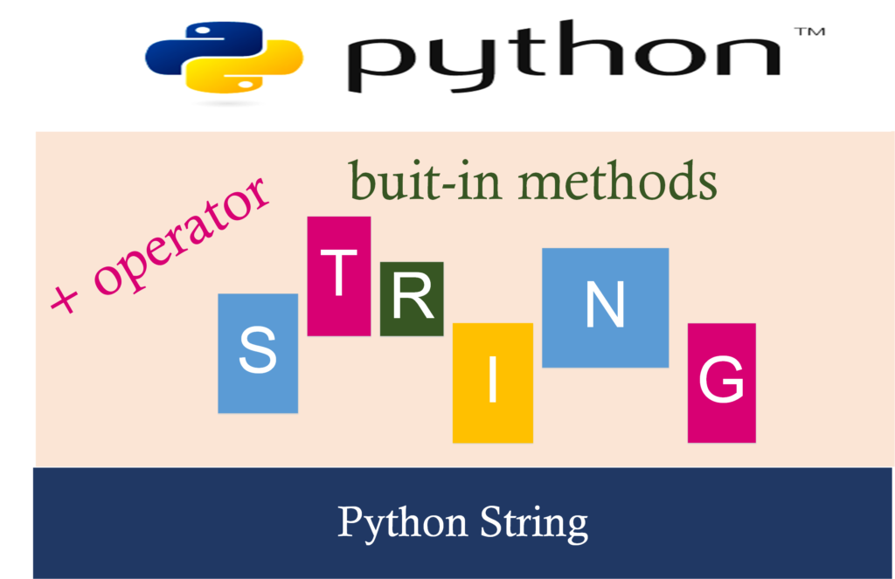

网络爬虫与文本分析实际上主要是对字符串做的处理，一定要熟悉字符串哦
字符串string
定义
字符串是以 单引号 或 双引号 或 三引号 括起来的任意文本，如
- 'abc'
- "abc"
- '''abc'''
- """abc"""
a = 'abc'
a
'abc'
"abc"
'abc'
'''abc'''
'abc'
"""abc"""
'abc'
print('abc')
print("abc")
print('''abc''')
print("""abc""")
abc
abc
abc
abc
print('abc')
print('efg')
abc
efg
注意:
- 这里所说的引号都是英文引号
''或""本身不是字符串的一部分，因此，字符串'abc'只有a，b，c这3个字符。- notebook中只显示最后一个，所以这里用了两个print
Tips: 这里所说的引号都是英文引号
''或""本身不是字符串的一部分，因此，字符串'abc'只有a，b，c这3个字符。notebook中只显示最后一个，所以这里用了两个print
拼接+
按顺序拼接
a = 'P'
b = 'ython'
print(a+b)
print(b+a)
Python
ythonP
a = 'P'
print(a+b)
print(b+a)
切片
切片就像切糕，把自己想要的那块切下来

name = 'My Name is Mike'
name[0]
'M'
name[-15]
'M'
name[3:6]
'Nam'
name[-12:-9]
'Nam'
name[0:2]
'My'
name[:2]
'My'
name[5:]
'me is Mike'
name[-7:]
'is Mike'
切片总结
| 切片表达式 | 解读 |
|---|---|
| 从左往右 | 索引值从0开始，0表示'第一个' |
| 从右向左 | -1表示倒数第一个，-2表示倒数第二个 |
| a:b | 选取列表索引位置为a，a+1...b-2, b-1的值 |
| a: | 选取列表中a之后的所有元素(含a) |
| :b | 选取列表中b之前的所有元素(不含b) |
字符串常用方法
再次强调，数据类(型)与猪牛羊不同的动物类型一样，都有满足人类需要的特殊本领(方法)。方法可以理解为数据类(型)一种特殊的本性、属性、特性
| 字符串常用方法 | 功能 |
|---|---|
| str.lower() | 变小写 |
| str.upper() | 变大写 |
| str.split(sep) | 使用sep将字符串分割，默认sep为空格 |
| str.replace(old, new) | 将str中的old替换为new |
| str.format() | 向str中填充内容 |
words = 'Python is poweful!'
words.lower()
'python is poweful!'
words.upper()
'PYTHON IS POWEFUL!'
words
'Python is poweful!'
words.split(' ')
['Python', 'is', 'poweful!']
words.replace('Python', 'Python programing language')
'Python programing language is poweful!'
需要发送每个员工的工资组成详情。
"张三,你这个月的工资是2310元；以下是你的工资详情。。。。"
"李四,你这个月的工资是3456元；以下是你的工资详情。。。。"
"王五,你这个月的工资是2431元；以下是你的工资详情。。。。"
如何自动化自动化填充?
template = '{name},你这个月的工资是{salary}元；以下是你的工资详情'
print(template.format(name='张三', salary='2310'))
print(template.format(name='李四', salary='3456'))
print(template.format(name='王五', salary='2431'))
张三,你这个月的工资是2310元；以下是你的工资详情
李四,你这个月的工资是3456元；以下是你的工资详情
王五,你这个月的工资是2431元；以下是你的工资详情
# 转义符\
如果字符串内部既包含 单引号 又包含 双引号， 会发生什么？
print('I'm "OK"!')
File "<ipython-input-28-af5dc904b170>", line 1
print('I'm "OK"!')
^
SyntaxError: invalid syntax
# 可以用 转义字符\ 来标识，比如：
print('I\'m \"OK\"!')
I'm "OK"!
常见的转义符还有
\n换行\t制表符字符\本身也要转义，所以\\表示的字符就是\
可以试着自己运行下面代码，看看下面打印结果是?：
print('Hello\tWorld!')
print('转义\n换行!')
print('反斜杠线\\')
print('Hello\tWorld!')
print('Hello World!')
Hello World!
Hello World!
print('转义\n换行!')
转义
换行!
print('反斜杠线\\')
反斜杠线\
r
如果字符串里面有很多字符都需要转义，就需要加很多\,
为了简化，Python还允许用r''表示''内部的字符串默认不转义,例如
print('\\\t\\')
print(r'\\\t\\')
print('hello world!')
print('\\\t\\')
\ \
print(r'\\\t\\')
\\\t\\